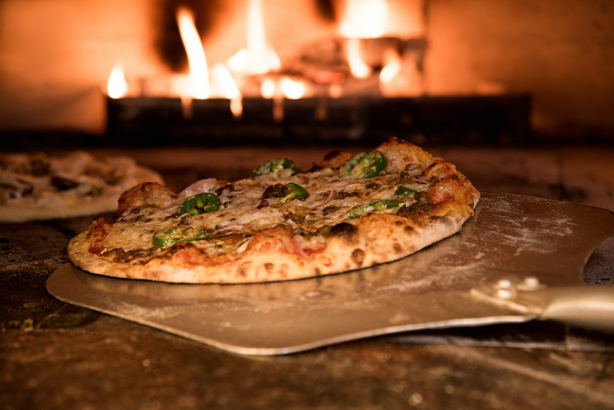
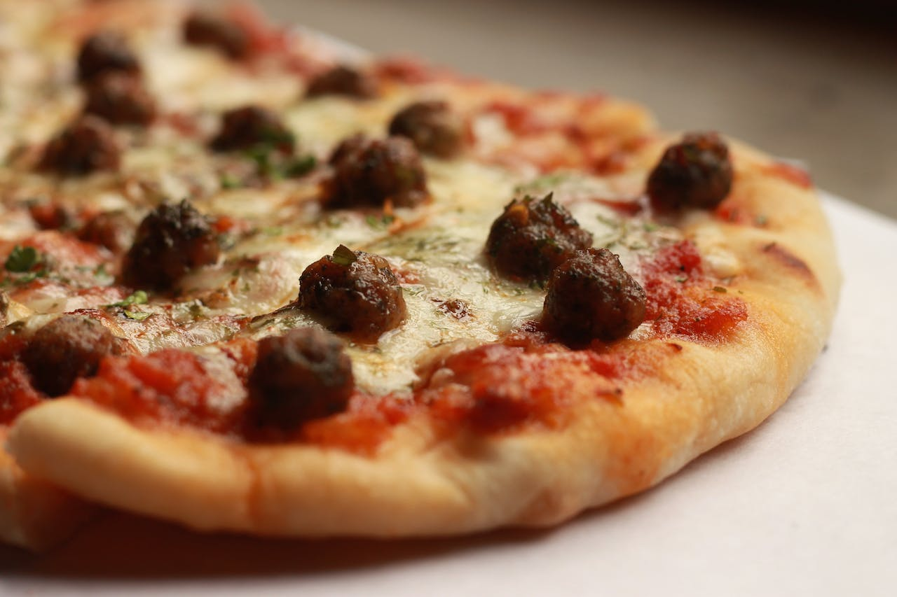

Bem-vindo à Pizzart! Saboreie a autêntica paixão italiana em cada fatia.
Nossas pizzas são preparadas com ingredientes frescos e amor. Experimente
a diferença em cada mordida!
Sabor que Encanta, Tradição que Perdura. Na Pizzart, cada pizza é uma
obra-prima. Delicie-se com nossas combinações únicas de sabores e descubra
por que somos a escolha preferida dos amantes de pizza.
Pizzas Feitas com Amor, Servidas com Sorrisos. Em cada pedaço da nossa
pizza, você sentirá o carinho que colocamos em cada preparo. De nossa
família para a sua, aproveite a experiência única da Pizzart.
Conheça a Verdadeira Arte da Pizza. Na Pizzart, não apenas fazemos pizza,
nós criamos experiências gastronômicas. Cada ingrediente é escolhido a
dedo para proporcionar um festival de sabores em cada caixa.
Sua Felicidade em Cada Mordida. Queremos transformar cada refeição em um
momento especial. Deixe-nos trazer a alegria à sua mesa com nossas
irresistíveis pizzas artesanais. Pizzart - onde a felicidade tem sabor!
Pizza: Uma Viagem de Sabores. Embarque em uma jornada culinária com nossas
pizzas exclusivas na Pizzart. Descubra novos mundos de sabor em cada fatia
e faça de cada refeição uma aventura deliciosa.
Feitas para Encantar, Feitas para Compartilhar. Nossas pizzas são mais do
que uma refeição; são uma celebração de momentos compartilhados. Traga
seus amigos e familiares para desfrutar das melhores pizzas da cidade na
Pizzart.
Inovação em Cada Mordida. Na Pizzart, não temos medo de experimentar.
Descubra nossas criações únicas que elevam a pizza a um nível superior.
Surpreenda seu paladar e deixe-nos levá-lo a uma jornada gastronômica
inesquecível.
Sabor Tradicional, Toque Contemporâneo. Mantendo a tradição italiana,
infundimos nossas pizzas com um toque moderno na Pizzart. Desfrute da
fusão perfeita de sabores clássicos e inovação culinária.
Onde a Tradição Encontra a Criatividade. Na Pizzart, honramos as raízes da
pizza enquanto exploramos novas fronteiras culinárias. Venha experimentar
a fusão perfeita de tradição e criatividade em cada pedaço.